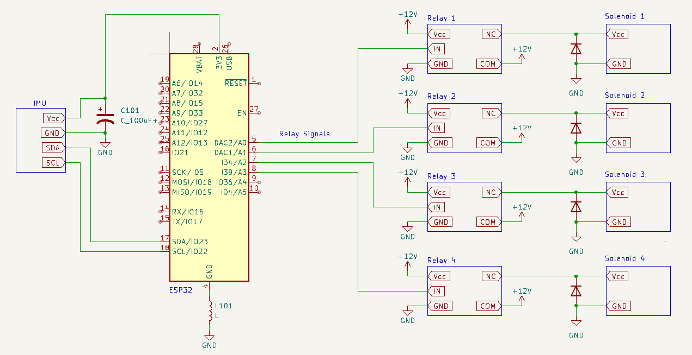

Electrical System
The electrical system of our project consists of four main elements: a microcontroller, an Inertial Measurement Unit (IMU), four relay modules, and four solenoid valves.
Components
Microcontroller: For our microcontroller, we opted to use an ESP32 Development Board. It serves as the central hub, processing data and controlling other components. The ESP32's 3.3V output powers key components in our system.

Inertial Measurement Unit (IMU): We used the MPU6050, with both a gyroscope and accelerometer, that collects orientation data necessary for stabilization. It is powered directly from the ESP32, ensuring seamless data communication over the I2C protocol.
Relay Modules: Four relays are used to control the solenoid valves. Based on signals from the ESP32, the relays close their circuits to actuate the valves. The relays are powered from the 3.3V output of the ESP32.
Solenoid Valves: The solenoid valves regulate the pressurized air from the thrusters. Each valve is connected to a relay, with the relay's 'common' pin tied to a 12V power supply. The valves act as the load in this circuit, ensuring controlled airflow for stabilization.
Circuit Diagram
Challenges
We encountered several challenges during the implementation of our electrical system. One of these challenges was that our IMU would reset at seemingly random times. We determined, by probing its power pins with an oscilliscope, that this was due to interference on the power line. This makes sense considering our usage of solenoid valves, which are big inductors that can cause EMI and back EMF. To solve this problem, our first step was to add flyback diodes across the solenoid valves to prevent unwanted voltage spikes with sudden current changes. While this definitely a necessary addition, it did not totally resolve our problems. Next, we added a small inductor across the common ground of the 3.3V supply and the 12V supply to filter out any potential offset. We additionally added a 100 uF capacitor in parallel with the IMU's power and ground to compensate for any sudden voltage changes. This solved our IMU reset problem.
Another challenge we encountered was that when we had pressurized air in our tanks, the solenoid valves would not all open. Initially we thought that this must have been due to a blockage in the tubing. However, what tipped us off that this was a power issue was that when the pressure in the tanks was lowered, both valves would function and allow air to flow. So, we determined that at higher pressures, the valves needed a higher current supplied in order to open. In retrospect, this was a simple issue to fix, as all we had to do was raise the current limit on our power supply. However, it was tough to diagnose since we were not even sure which system was causing problems!